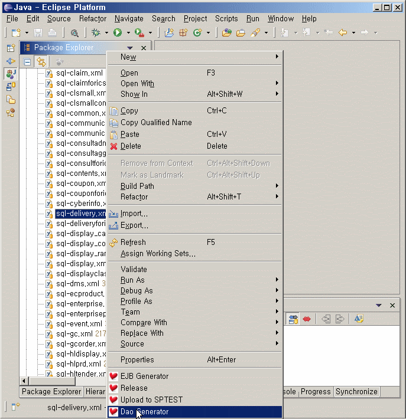

Milti Tools For Eclipse Plugin
1. Dao Generator 해당 query xml를 선택후 Dao Generator를 실행하면 해당 Category에 대한 Dao 생성 후 Dao Package를 refresh시킵니다. Build automatically가 선택되어 있으면 refresh후 compile 됩니다. sql-consultforicss.xml, sql-cdoutlet.xml는 다른 dao package를 가지는 category가 존재함으로 기존 방법을 이용하십시오.  2. Upload To SPTEST local 파일들을 sp test server(218.144.89.244)서버에 매핑되는 디렉터리로 FTP를 통해 전송시킵니다. D:\interpark\shopping\backup\yyyy-MM-dd에 원본 소스를 백업하고 수정된 파일을 복사합니다. 로컬에는 존재하는 디렉터리지만 서버에는 없을 경우 서버에 디렉터리를 만듭니다.3. Query Extractor Console View에 선택된 query관련 로그를 '[exec]'를 ''로 '[NULL]'를 'null'로 치환 후 clipboard에 복사해 줍니다. 다른 apllication에서 붙여넣기하시면 됩니다. 4. EJB Generator EJB 생성를 생성합니다. Jeus Tools 대체용입니다. 5. Release 긴급, 추가, 테스트, 배치릴리즈를 합니다. 릴리즈 디렉터리 svn update, 릴리즈 디렉터리 생성, 선택된 파일 복사, 엑셀파일작성, svn commit 과정을 바로 처리할 수 있습니다. 최초 실행시에는 릴리즈 디렉터리를 찾기 버튼을 클릭하여 설정하고 이름에는 본인의 이름을 설정해야 합니다. 릴리즈유형, 분류, 위치, 요청사유를 선택하고 Finish 버튼을 클릭하면 일련의 과정들이 수행됩니다. 작업완료후 commit하기를 선택하면 svn commit까지 됩니다. 작업완료후 생성된 디렉터리 탐색기로 확인하기를 선택하면 일련 작업이 완료된 후 탐색기가 열리면서 생성된 디렉터리가 보이게 됩니다. class를 반영하기 위해서 view에서 class를 볼 수 있어야 하는데 일반적으로 Navigator View를 사용하세요.

설치
1. eclipse 종료 2. D:\interpark\shopping\eclipse\plugins 기존에 miltiTools_1.0.0.jar가 있으면 삭제하십시요. 3. miltiTools_1.0.1.jar를 오른쪽 마우스 클릭하여 다른 이름으로 대상 저장 클릭하여 D:\interpark\shopping\eclipse\plugins에 파일이름 확장자를 jar로 하여 저장합니다. (파일 저장 다이얼로그에서 파일이름이 miltiTools_1.0.1.zip로 나타나면 miltiTools_1.0.1.jar로 저장하세요) 4. sample.xls를 다운로드 받아서 D:\interpark\shopping\miltiTools 디렉터리를 만들어서 복사합니다. 5. eclipse 시작 ** plugin 인식이 되지 않을때 ** 이클립스 실행 아이콘을 오른쪽 마우스 클릭하여 메뉴에서 속성을 클릭 바로가기탭에서 대상에 eclipse.exe 실행 명령어에 -clean -noregistrycache 옵션을 추가함 이클립스를 종료하고 miltiTools_1.0.1.jar를 삭제함 이클립스를 실행 이클리스를 종료하고 miltiTools_1.0.1.jar를 다시 plugin 디렉터리에 복사 이클립스를 다시 실행